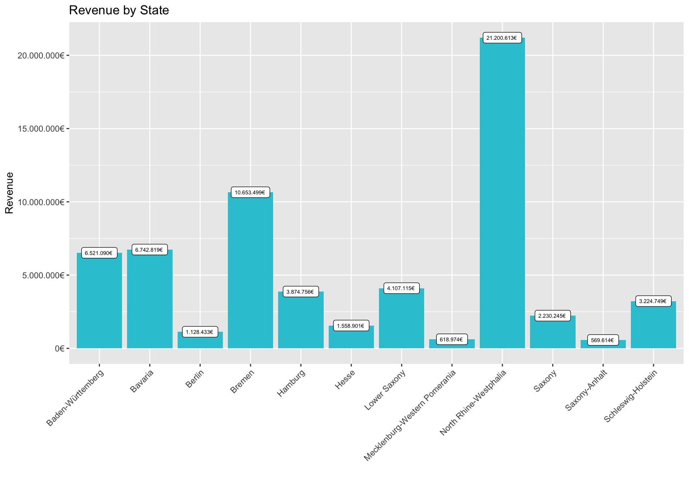

IMPORTANT: You can delete everything in here and start fresh. You might want to start by not deleting anything above this line until you know what that stuff is doing.
This is an .Rmd file. It is plain text with special features. Any time you write just like this, it will be compiled to normal text in the website. If you put a # in front of your text, it will create a top level-header.
library(tidyverse)
library(lubridate)
library(readxl)
# import the data
bikes_tbl <- read_excel("/Users/philipsalmang/Documents/R/Business Data Science Basics/DS_101/00_data/01_bike_sales/01_raw_data/bikes.xlsx")
orderlines_tbl <- read_excel("/Users/philipsalmang/Documents/R/Business Data Science Basics/DS_101/00_data/01_bike_sales/01_raw_data/orderlines.xlsx")
bikeshops_tbl <- read_excel("/Users/philipsalmang/Documents/R/Business Data Science Basics/DS_101/00_data/01_bike_sales/01_raw_data/bikeshops.xlsx")
# 4.0 Joining Data ----
bike_orderlines_joined_tbl <- orderlines_tbl %>%
left_join(bikes_tbl, by = c("product.id" = "bike.id")) %>%
left_join(bikeshops_tbl, by = c("customer.id" = "bikeshop.id"))
# 5.0 Wrangling Data ----
bike_orderlines_wrangled_tbl <- bike_orderlines_joined_tbl %>%
separate(col = location,
into = c("city", "state"),
sep = ",") %>%
separate(col = order.date,
into = c("order.year"),
sep = "-") %>%
mutate(total_price = quantity*price)
sales_by_state <- bike_orderlines_wrangled_tbl%>% group_by(state) %>%
summarize(sales = sum(total_price)) %>%
mutate(sales_euro = scales::dollar(sales, big.mark = ".",
decimal.mark = ",",
prefix = "",
suffix = "€ "))
# 6. Graph for sales by state
sales_by_state_plt <-sales_by_state %>% ggplot(aes(x = state, y = sales)) +
geom_col(fill = "#2DC6D6") +
labs(title = "Revenue by State",
x = "",
y = "Revenue") +
geom_label(aes(label = sales_euro),size=2) + # Adding labels to the bars
scale_y_continuous(labels = scales::dollar_format(big.mark = ".",
decimal.mark = ",",
prefix = "",
suffix = "€")) +
theme(axis.text.x = element_text(angle = 45, hjust = 1))
show(sales_by_state_plt)# Analyze by state and by year using face_wrap
sales_by_state_year <- bike_orderlines_wrangled_tbl %>% group_by(order.year, state) %>%
summarize(sales = sum(total_price))
sales_by_state_year_plt <- sales_by_state_year %>%
# Set up x, y, fill
ggplot(aes(x = order.year, y = sales, fill = state)) +
# Geometries
geom_col() + # Run up to here to get a stacked bar plot
# Adding the trend
geom_smooth(method = "lm", se = FALSE) + # Adding a trendline
# Facet
facet_wrap(~state) +
# Formatting
scale_y_continuous(labels = scales::dollar_format(big.mark = ".",
decimal.mark = ",",
prefix = "",
suffix = " €")) +
labs(
title = "Revenue by year and state",
x = "",
fill = "" # Changes the legend name
)
show(sales_by_state_year_plt)Last compiled: 2020-12-01
Notice that whatever you define as a top level header, automatically gets put into the table of contents bar on the left.
You can add more headers by adding more hashtags. These won’t be put into the table of contents
Here’s an even lower level header
Last compiled: 2020-12-01
# 1.0 LIBRARIES ----
library(tidyverse) # Main Package - Loads dplyr, purrr, etc.
library(rvest) # HTML Hacking & Web Scraping
library(xopen) # Quickly opening URLs
library(jsonlite) # converts JSON files to R objects
library(glue) # concatenate strings
library(stringi) # character string/text processing
url_home_rose <- "https://www.rosebikes.de"
html_home_rose <- read_html(url_home_rose)
# 2.0 Retrieving urls off categories
bike_url_rose_tbl <- html_home_rose %>%
html_nodes(css = ".main-navigation-category-with-tiles__item> a") %>%
html_attr("href") %>%
# remove sale category
discard(.p = ~stringr::str_detect(.x,"sale")) %>%
# make a dataframe and remove family_class for better overview
enframe(name = "position", value = "family_class") %>%
mutate(bike_url = glue("{url_home_rose}{family_class}")) %>%
subset(select = -family_class)
### FOR TESTING WITH SINGLE URLS
# # Retrieve all bike model urls
# bike_url <- bike_url_rose_tbl$bike_url[2]
# html_bike_category <- read_html(bike_url)
# all_bike_model_urls_tbl <- html_bike_category %>%
# html_nodes(css = ".row .align-middle > a") %>%
# html_attr("href") %>%
# enframe(name = "position", value = "bike_model_url")%>%
# mutate(bike_model_url = glue("{url_home_rose}{bike_model_url}"))
# 3.0 Retrieve bike URLS of every single bike
get_all_urls <- function(bike_main_url){
html_bike_category <- read_html(bike_main_url)
bike_model_url_tbl <- html_bike_category %>%
html_nodes(css = ".row .align-middle > a") %>%
html_attr("href") %>%
enframe(name = "position", value = "bike_model_url")%>%
mutate(bike_model_url = glue("{url_home_rose}{bike_model_url}"))
}
# URLs of only categories
bike_cat_url_vec <- bike_url_rose_tbl %>% pull(bike_url)
# Run the function with Category URLs as an argument to get ALL URLs
bike_data_lst <- map(bike_cat_url_vec, get_all_urls)
bike_data_url_tbl <- bind_rows(bike_data_lst)
# 4.0 Retrieve ALL prices, Model Names, Categories and Subcategories
# of individual bike models
get_prices <- function(bike_url){
html_bike <- read_html(bike_url)
# Bike Prices
bike_model_price_tbl <- html_bike %>%
html_nodes(css = ".catalog-category-model__price-current-value") %>%
str_replace("^[^\\n]+", "") %>%
# replace at the end everything after the last "}" with ""
str_replace("[^\\n]+$", "") %>%
enframe(name = "position", value = "Price")
# Bike Model Names
bike_model_name_tbl <- html_bike %>%
html_nodes(css = ".catalog-category-model__title") %>%
html_text() %>%
enframe(name = "position", value = "Name")
# Bike Categories
bike_category_tbl <- html_bike %>%
html_nodes(css = ".catalog-breadcrumb__list-item-link") %>%
html_attr("title") %>%
enframe(name = "position", value = "Category")
# Joint Table of bike proces and names
bike_tbl <- bike_model_name_tbl %>%
left_join(bike_model_price_tbl)
# Add Bike Categories and Subcategories to bike_table
bike_tbl <- bike_tbl %>%
mutate(Category = bike_category_tbl$Category[3],
Subcategory = bike_category_tbl$Category[4]) %>%
select(position, Category, Subcategory, Name, Price)
}
# URLs of ALL bikes
all_bike_url_vec <- bike_data_url_tbl %>% pull(bike_model_url)
bike_price_lst <- map(all_bike_url_vec,get_prices)
bike_price_tbl <- bind_rows(bike_price_lst) %>% select(-c(1))
#####TEST ONLY
## FOR TESTING WITH SINGLE URLS
# find bike description price
# bike_price_url <- bike_data_url_tbl$bike_model_url[1]
# html_bike_price_category <- read_html(bike_price_url)
#
# bike_model_price_tbl <- html_bike_price_category %>%
# html_nodes(css = ".catalog-category-model__price-current") %>%
# html_text() %>%
# enframe(name = "position", value = "Price")
# bike_model_name_tbl <- html_bike_price_category %>%
# html_nodes(css = ".catalog-category-model__title") %>%
# html_text() %>%
# enframe(name = "position", value = "Name")
# bike_category_tbl <- html_bike_price_category %>%
# html_nodes(css = ".catalog-breadcrumb__list-item-link") %>%
# html_attr("title") %>%
# enframe(name = "position", value = "Category")
#
# bike_table <- bike_model_name_tbl %>%
# left_join(bike_model_price_tbl)
# bike_table <- bike_table %>%
# mutate(Category = bike_category_tbl$Category[3],
# Subcategory = bike_category_tbl$Category[4]) %>%
# select(position, Category, Subcategory, Name, Price)I’m writing this tutorial going from the top down. And, this is how it will be printed. So, notice the second post is second in the list. If you want your most recent post to be at the top, then make a new post starting at the top. If you want the oldest first, do, then keep adding to the bottom
So far this is just a blog where you can write in plain text and serve your writing to a webpage. One of the main purposes of this lab journal is to record your progress learning R. The reason I am asking you to use this process is because you can both make a website, and a lab journal, and learn R all in R-studio. This makes everything really convenient and in the same place.
So, let’s say you are learning how to make a histogram in R. For example, maybe you want to sample 100 numbers from a normal distribution with mean = 0, and standard deviation = 1, and then you want to plot a histogram. You can do this right here by using an r code block, like this:
samples <- rnorm(100, mean=0, sd=1)
hist(samples) When you knit this R Markdown document, you will see that the histogram is printed to the page, along with the R code. This document can be set up to hide the R code in the webpage, just delete the comment (hashtag) from the cold folding option in the yaml header up top. For purposes of letting yourself see the code, and me see the code, best to keep it the way that it is. You’ll learn that all of these things and more can be customized in each R code block.